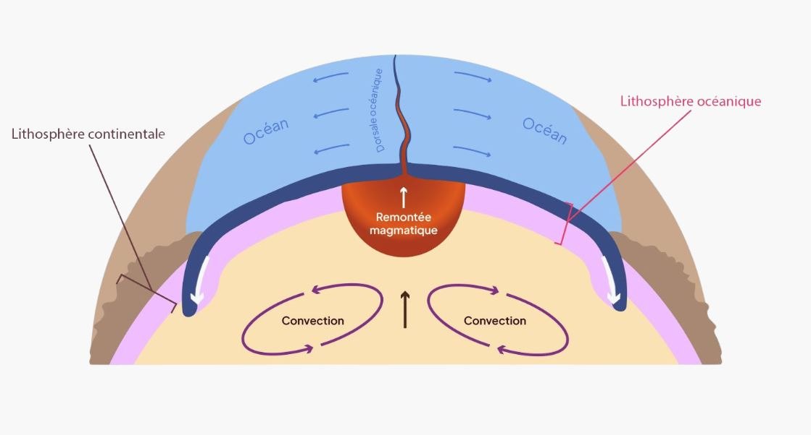
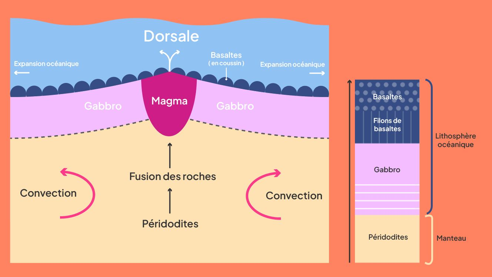
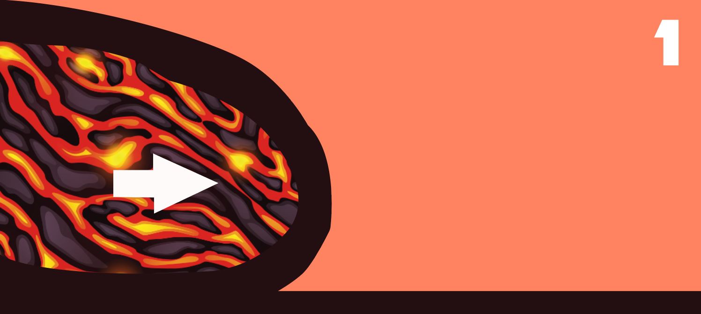
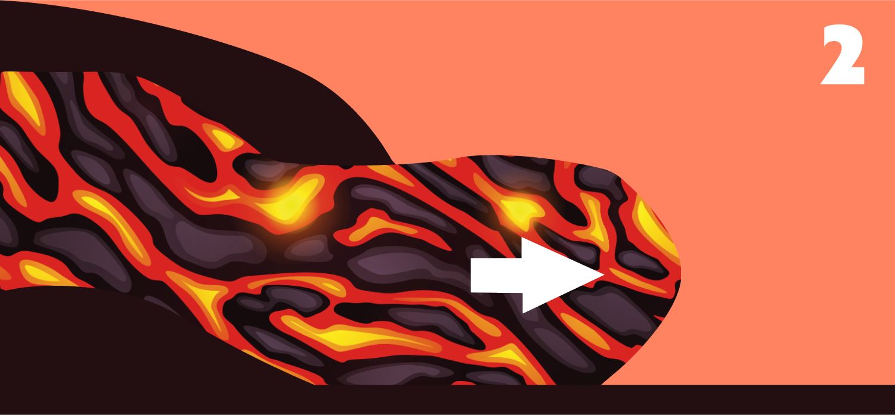
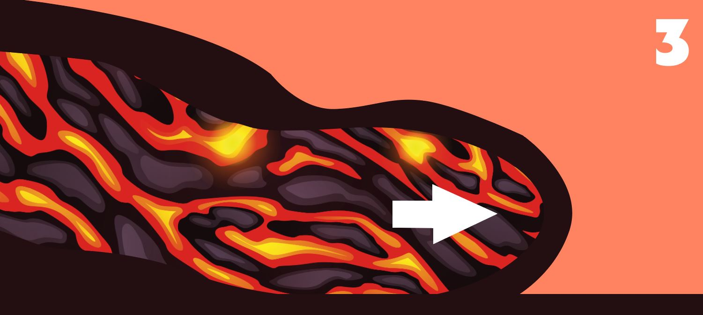
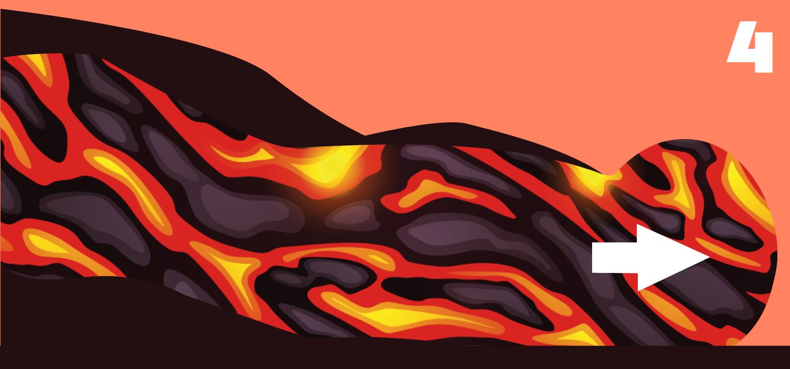
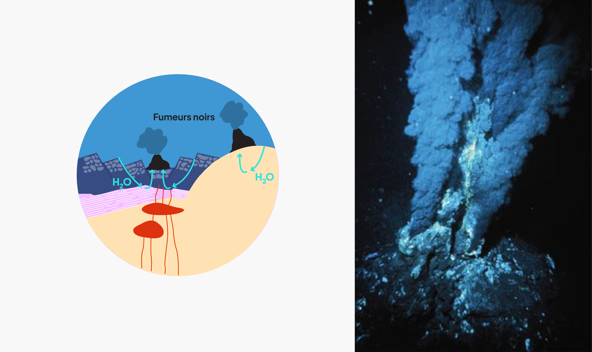
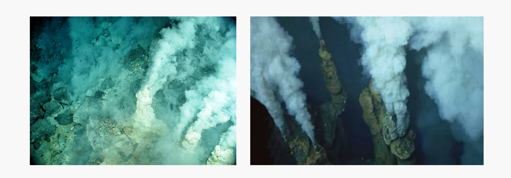
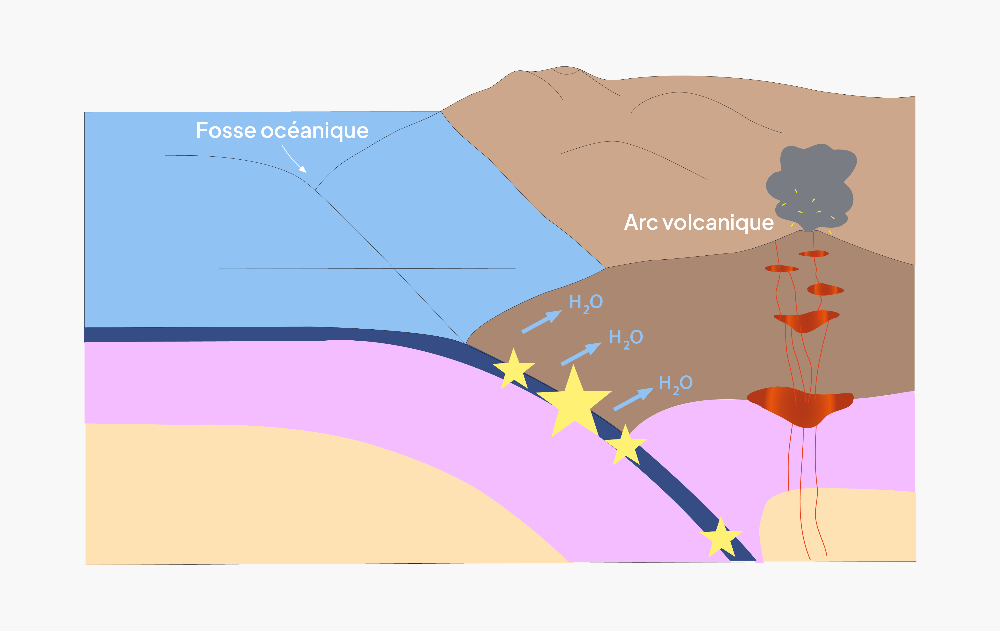
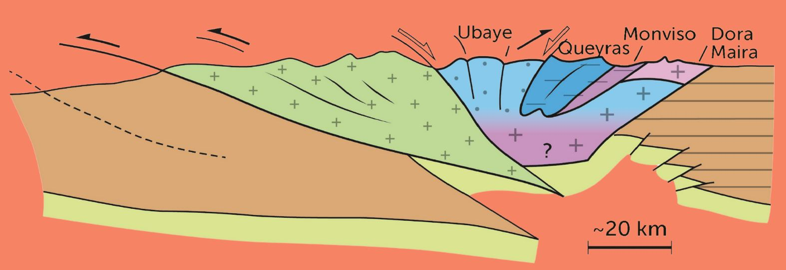

• Le cycle des roches
Formation de la croûte océanique
La formation de la croûte terrestre est due au phénomène d’accrétion océanique. Au niveau des zones de divergence près des dorsales océaniques, les roches chaudes du manteau remontent vers la surface.
Pendant cette ascension, les échanges thermiques entre les roches et leur environnement sont minimes. En revanche, la pression diminue fortement. C’est en réalité cette baisse de pression qui engendre une fusion partielle des roches. En effet, lorsque la pression diminue, la température nécessaire à la fusion des roches est bien plus basse.
Zone de divergence

Accrétion de la croûte océanique
Le magma ainsi formé remonte, s’échappe sous forme de lave, en formant des coussins (ou pillows lavas).

La lave perce à nouveau le coussin de l’intérieur, s’étale et se solidifie à nouveau pour former la croûte océanique, qui s’accumule au fond des océans.

Le magma est coincé dans une enveloppe vitrifiée

Sous la pression, la coulée de lave perce l’enveloppe

Au contact de l’océan, la lave se vitrifie en surface

Le processus se répète en continu
• Métamorphoses par hydrothermalisme
Hydrothermalisme à l’intérieur de la croûte océanique
Les sources hydrothermales sous-marines, communément appelées « fumeurs », sont des structures géologiques aux abords des dorsales océaniques qui résultent de l’interaction entre l’eau de mer froide et les chambres magmatiques en profondeur, chaudes. On distingue principalement deux types de fumeurs : les fumeurs noirs et les fumeurs blancs.
Fumeurs noirs
Les fumeurs noirs permettent d’évacuer une partie de la chaleur interne de la Terre depuis le manteau terrestre vers l’océan. Ils s’apparentent à des cheminées hydrothermales émettant des fluides à très hautes températures, souvent supérieures à 300 °C.
Ces fluides, riches en sulfures métalliques tels que le fer et le manganèse, précipitent (cristallisent) au contact de l’eau froide de l’océan, formant ainsi des panaches noirs. Ils se développent principalement le long des dorsales océaniques.
Dans ces zones, l’eau de mer s’infiltre dans la croûte océanique, se réchauffe au contact du magma, puis remonte en dissolvant lors de son passage divers minéraux contenus dans les roches. C’est la circulation de cette eau à l’intérieur de la croûte océanique qui provoque l’altération des roches du plancher océanique.
On appelle ces transformations minérales à l’état solide : le métamorphisme.

Fumeurs blancs
La formation des fumeurs blancs est souvent associée à l’altération de roches comme les péridotites (roches du manteau riche en fer et magnésium). Ils dégagent des fluides riches en composés tels que le baryum, le calcium et le silicium, qui précipitent pour former des panaches de couleur claire.

Qu’est-ce que le métamorphisme ?
Le métamorphisme est un processus qui transforme les roches à l’état solide, sous l’effet de changements de pression, de température et de présence d’eau. Il entraîne la formation de nouveaux minéraux, adaptés aux conditions du milieu, sans fusion de la roche. Ces transformations permettent de définir différentes catégories appelées : faciès métamorphiques.
Un faciès est l’aspect d’une roche métamorphique, caractérisé par un assemblage de minéraux stables dans une gamme précise de pression et température. Il garde la mémoire des conditions dans lesquelles la roche s’est formée. L’observation de ces faciès permet donc de reconstituer l’histoire géologique d’une roche et de localiser sa formation dans la croûte terrestre.
Par exemple, le faciès schiste vert est défini essentiellement par la présence de trois familles de minéraux : feldspaths plagioclases (famille de minéraux silicatés), chlorite et épidote. La chlorite, un minéral vert hydraté, lui donne sa couleur verdâtre typique de ce faciès.

Métamorphisme en zone de subduction
En s’enfonçant dans le manteau, la plaque océanique subit des conditions de plus en plus extrêmes, avec une augmentation de la pression et de la température. Cette plongée provoque l’altération des minéraux directement à l’état solide.
Ces transformations s’expliquent par la libération progressive de l’eau contenue dans les minéraux hydratés. Sous l’effet de la pression et de la température, cette eau est expulsée et engendre la formation de nouveaux minéraux plus denses et moins hydratés. Cette déshydratation rend les roches plus cassantes, favorise les séismes en profondeur, et peut provoquer la fusion partielle du manteau, à l’origine du volcanisme.
Par exemple, le gabbro, roche de la croûte océanique, subit un métamorphisme progressif lors de sa subduction Dans les premiers kilomètres, à faible température et à faible pression, il évolue vers le faciès Schiste Vert, marqué par la formation de plagioclase, chlorite et épidote.
À mesure que la profondeur augmente (20 à 50 km), la pression s’accentue tandis que la température reste modérée (~400–500°C). La chlorite devient instable et se transforme en glaucophane, une amphibole bleue, parfois accompagnée de lawsonite ou épidote. C’est le faciès Schiste Bleu, caractéristique des zones de subduction froides et hydratées.
Au-delà de 60 km de profondeur, les minéraux hydratés sont remplacés par des minéraux plus compacts et anhydres, comme le grenat et l’omphacite (un pyroxène vert). C’est le faciès Éclogite, typique des hautes pressions.

Magmatisme et volcanisme d’arc
Lors de la subduction, des fluides riches en eau et d’autres éléments comme le potassium (K), le calcium (Ca) et le sodium (Na) sont libérés. Une partie de ces fluides remonte vers la surface tandis que l’autre s’infiltre dans le manteau de la plaque chevauchante.
Ces fluides altèrent les roches du manteau et modifient leur composition chimique en les hydratant. Cette réaction entre les roches et ces fluides est appelée métasomatose. Cette hydratation est importante dans la formation de magma.
En effet, elle déclenche la fusion partielle des roches entre 80 et 100 km de profondeur. Le magma, ainsi produit, remonte à la surface et alimente les volcans présents dans les zones de subduction (volcanisme d’arc).
Écailles des roches
Au fur et à mesure que la lithosphère se déshydrate, elle devient plus dense et finit par s’enfoncer profondément dans le manteau terrestre.
Elle descend jusqu’à 2900 km où elle est progressivement recyclée. Cette zone est parfois nommée le «cimetière des plaques».
Cependant, quelques écailles de roches se détachent de la plaque de subduction et remontent vers la surface.On les retrouve aujourd’hui dans les chaînes de montagnes.
En remontant, ces roches conservent des minéraux, appelés “fossilisés”, qui se sont formés aux pressions et aux températures présentes en profondeur.
En les étudiant, les chercheurs peuvent reconstituer le parcours de ces roches et mieux comprendre la composition interne et la thermodynamique de notre planète.
